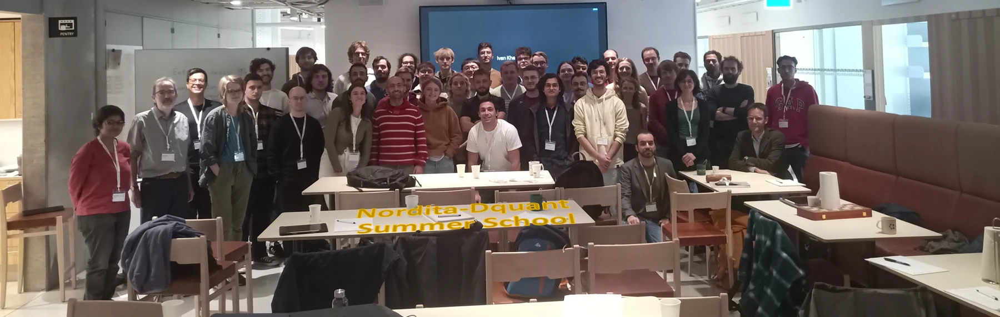
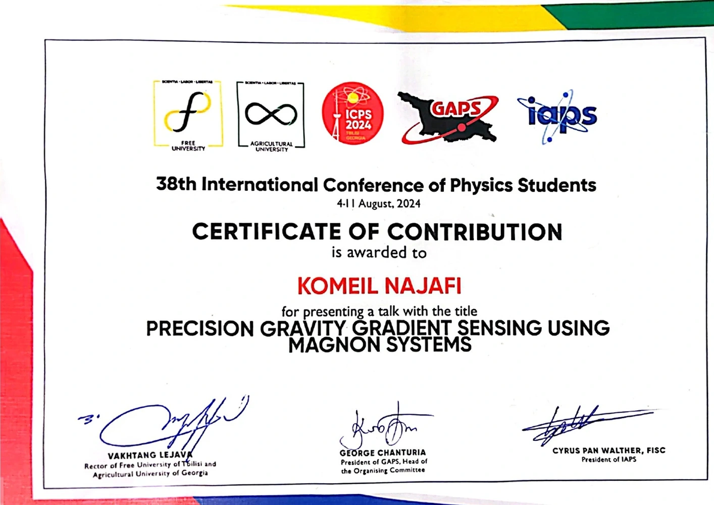

Second Workshop on Quantum Technology
Sharif University of Technology, Tehran.
International experience
My international activities include a research talk at ICPS in Georgia and participation in a Nordita summer school in Stockholm, with a poster on magnonic gravity gradient sensing.
Conference presentation, poster discussion, lectures, and international research exchange.
Nordita, Stockholm
I attended the in person summer school at Nordita in Stockholm from September 16 to 20, 2024. The program focused on quantum chaos, open quantum systems, random matrix methods, monitored dynamics, and the characterization of noisy quantum devices.
I presented a poster titled Gravity Gradient Sensing via Magnonic Systems and discussed the project with participants working across quantum information, condensed matter, and open system dynamics.


ICPS, Georgia
At the 38th International Conference of Physics Students in Georgia, held from August 4 to 11, 2024, I presented a talk titled Precision Gravity Gradient Sensing Using Magnon Systems.
The experience helped me communicate the research to a broad physics audience and receive questions from students working in different areas of experimental and theoretical physics.
Wider academic engagement
Sharif University of Technology, Tehran.
Isfahan University of Technology.
Isfahan University of Technology.
Sharif University of Technology.
Certificates
Open the available certificates as PDF files.